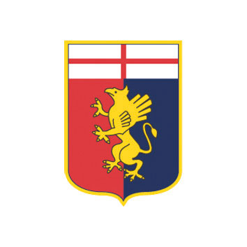
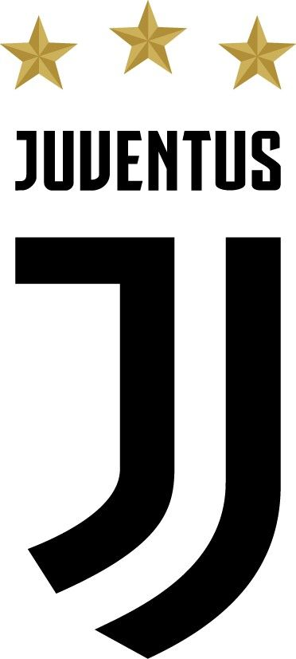
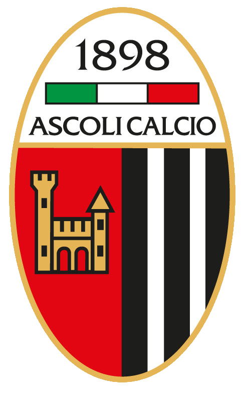
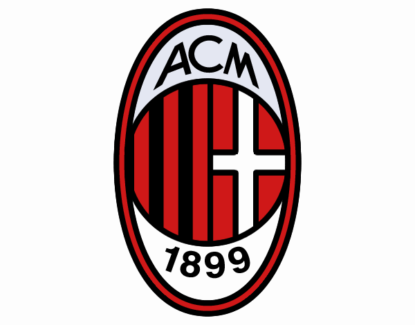
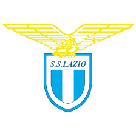

Il Genoa CFC – che sta per Cricket Football Club – è una delle società pionieristiche nel calcio italiano. Anno di fondazione 1893, ben sei anni prima del Milan. Quella rossoblù non è stata la prima squadra di calcio in assoluto, bensì la quarta, ma di sicuro è la più longeva per quanto ci riguarda e ancora stabilmente in Serie A. Il Genoa ha origini inglesi, come può ricordare anche il nome sociale, e la leggenda James Spensley è considerato come colui che ha portato il calcio in Italia. Il Genoa non è sempre stato rossoblù, ma ha iniziato vestendo di bianco.
Seconda società per longevità in Italia è la Juventus, non a caso la Vecchia Signora. Il club bianconero è nato il 1° novembre 1897 quando un gruppo di giovani studenti del liceo classico “d’Azeglio” di Torino si trovò su una panchina e decise di creare una squadra di football. Il bianconero è stato introdotto solo nel 1903, come il Notts County ovvero la prima squadra della storia, invitato come sparring partner all’inaugurazione dello Juventus Stadium.
Il gradino più basso del podio è a sorpresa dell’ Ascoli che, come un’altra marchigiana ovvero la Vis Pesaro, è stato fondato nel 1898, pur essendo annunciato pubblicamente solo tre anni dopo. Il Picchio ha disputato 16 campionati di Serie A e il miglior piazzamento nella propria storia ultracentenaria è il quarto posto nella stagione 1979/80. In origine la squadra – fondata da 12 giovani ascolani – si chiamava Candido Augusto Vecchi in memoria di un colonnello garibaldino, nonché patriota, cittadino adottivo di Ascoli Piceno.
Il club milanese ha origini inglesi, fondato da Herbert Kilpin che ne è stato il primo allenatore. Il Milan si iscrisse alla federcalcio dell’epoca solo nel 1900, ma già l’anno seguente vinse il primo titolo nazionale interrompendo il dominio del Genoa.
La Lazio fu fondata il 9 gennaio 1900 – pochi giorni dopo il Milan – nel rione Prati di Roma da un gruppo di 15 ragazzi, ma si affiliò alla federcalcio solo nel 1908, partecipando alla massima serie per la prima volta nel 1912. Due gli scudetti vinti dalla Lazio: nel 1973/74 e nel 1999/2000.
